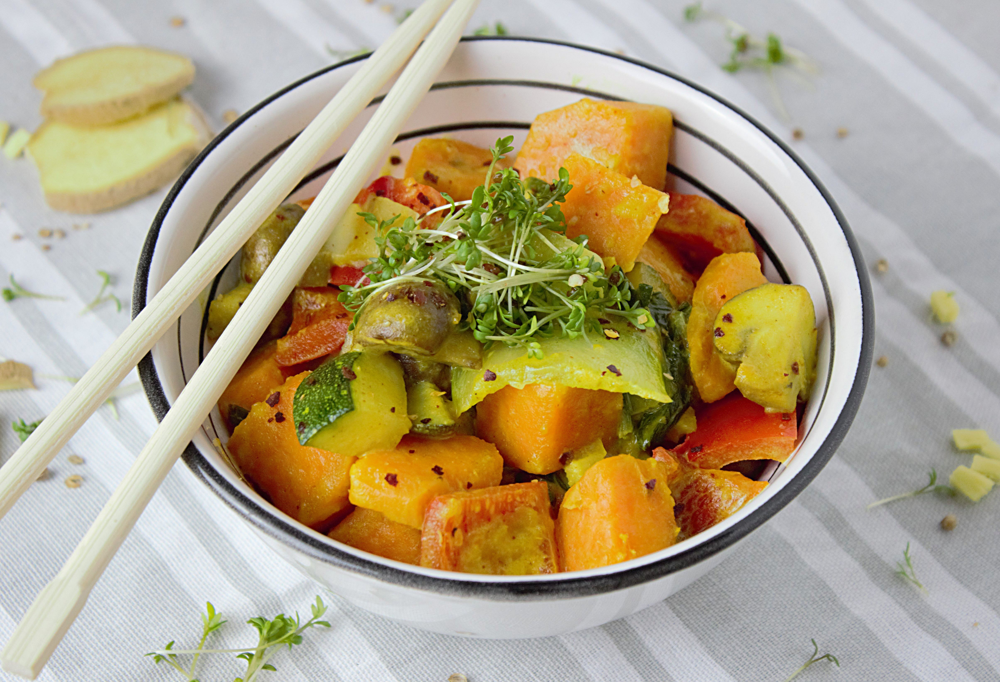
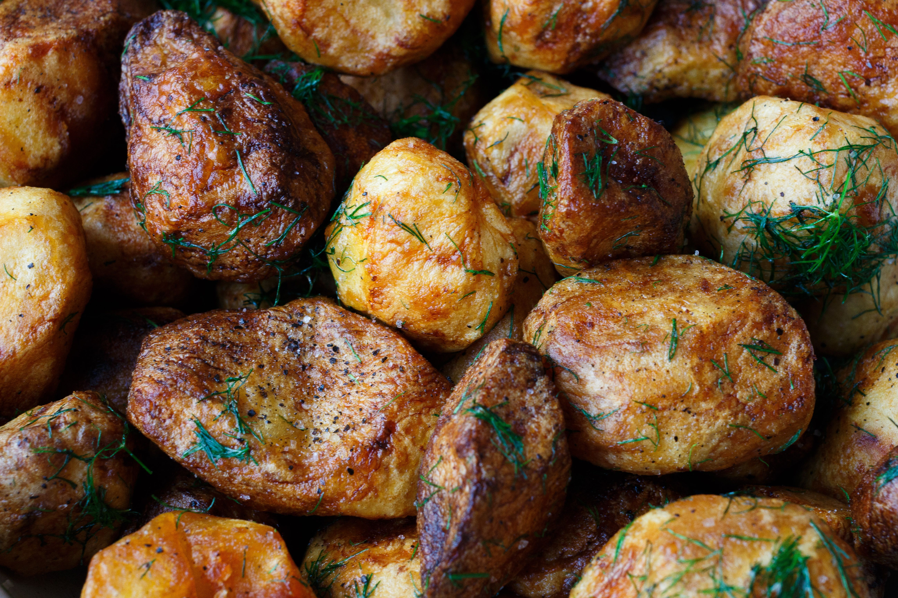
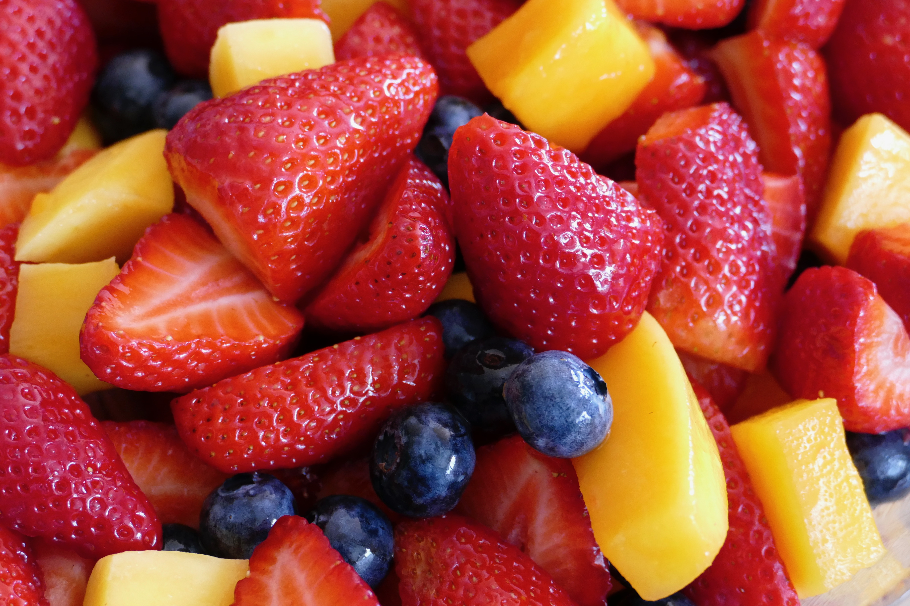

La Cuisine Végétalienne
Accueil
Par où commencer
Leçons en ligne
Commander en ligne
Nos ingrédients
Contact
Cuisiner végétalien, c'est tout un art
Cuisiner végétalien, c'est simple
Bienvenue dans l'Univers de la Cuisine Végétalienne

Préparer les entrées
Recommandations pour débutants
Par où commencer ?

Préparer les plats de résistance
Recommandations pour débutants
Par où commencer ?
Préparer les desserts
Recommandations pour débutants
Par où commencer ?

Pour aller plus loin
Nos recettes exclusives
Voir les recettes